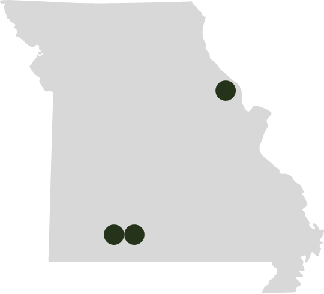

Scroll over the dots on the map to see where the monsters are most frequently sighted!

The first sighting of Momo occurred in the small town of Louisiana, Mo. Since then many locals have spotted the creature along the Mississippi River.
Sightings of The Ozark Howler have occurred in the tri-state area of Arkansas, Texas and Missouri, primarily in the Ozark region.
The first sighting of the Ozark Howler was documented in Nixa. However, years later many still reporting seeing the creature in Southwest Missouri.